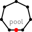
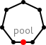

Room |
 User |
 Spool |
 Printer |
 Job |
%active Printer : 1;
%active User : 1;
%active Job : 1;
%active Room : 1;
%active Spool : 1;
Alexander Faithfull, Gian Perrone, and Thomas
T. Hildebrandt
IT University of Copenhagen, Denmark
{alef,gdpe,hilde}@itu.dk
Big Red requires version 3.7 or later of the Eclipse
Modeling Tools package, which is available from
http://www.eclipse.org/downloads.
Once you have a suitable version of Eclipse,
download
Big Red and extract it into Eclipse's
dropins/ folder.
Bigraphs have been successful in capturing the syntax and semantics of a number of well-known formalisms (e.g., π-calculus[1], Petri Nets[2], CCS[3], and many more), as well as more diverse applications such as business processes[4], systems biology[5], wireless networks[6], and applications for context-aware systems[7].
(Each figure is annotated with
black-on-gray monospaced text
giving a corresponding representation in the term
language of the BigMC tool.)
|
Room |
User |
 Spool |
Printer |
Job |
%active Printer : 1;
%active User : 1;
%active Job : 1;
%active Room : 1;
%active Spool : 1;
Room[a].(User[b].$3 | $1) || Room[a].$2 -> Room[a].$1 || Room[a].($2 | User[b].$3);
The MoveRoom rule matches a User (represented by a U node), and selects any two rooms that are connected by some name a. It then permits the user to move to the other room, leaving the contents of each room otherwise unchanged.
Printer[b].Job[a] -> Printer[b];
FinishJob captures the idea of a printer finishing a job (by executing the actual print process), and the job is therefore removed completely from the system by this rule, disconnecting it from its associated user.

Room[c].(Printer[a] | User[b].$3 | $1) || Spool[a].(Job[b] | $2) -> Room[c].(Printer[a].Job[b] | User[b].$3 | $1) || Spool[a].$2;
JobToPrinter transfers a job from the spool to a printer (represented by a P node) that is co-located with the user associated with that job. (Notice that printers may only contain one job at a time.)

User[x].(Job[-] | $1) || Spool[y].$2 -> User[x].$1 || Spool[y].($2 | Job[x]);
JobToSpool allows a print job (represented by a J node) to be transferred from a user (represented by a U node) to a spool (represented by an S node), adding an identifying link to connect users to their submitted print jobs.

Room[b].Printer[a] | Spool[a] | Room[b].User[User].Job[-];
This agent represents a simple office environment:—
P
node) is connected to the spool (represented by a
S node);
U node)
has a print job (represented by a J node),
which can be submitted to the
spool; and
After both of these rules have fired once — that is, after the job has been submitted to the spool and the user has moved into the printer room — the job can be submitted to the room's printer and then printed.

Room[b].Printer[a] | Room[b].Printer[a] | Spool[a] | Room[b].User[Michael].Job[-] | Room[b].User[David];
This more complex environment contains:—
Michael outer name), who can — as
before — submit his job to
the spool and move between
rooms;
David outer name), who can only move fruitlessly between rooms;
and
| [1] | O.H. Jensen. Mobile processes in bigraphs. Available at http://www.cl.cam.ac.uk/~rm135/Jensen-monograph.pdf, October 2006. [ bib ] |
| [2] | J. Leifer and R. Milner. Transition systems, link graphs and Petri nets. Journal of Mathematical Structures in Computer Science, 16(6):989-1047, 2006. [ bib | DOI ] |
| [3] | R. Milner. Pure bigraphs: Structure and dynamics. Information and Computation, 204(1):60-122, January 2006. [ bib | DOI ] |
| [4] | T.T. Hildebrandt, H. Niss, and M. Olsen. Formalising Business Process Execution with Bigraphs and Reactive XML. In COORDINATION'06, volume 4038 of Lecture Notes in Computer Science, pages 113-129. Springer-Verlag, January 2006. [ bib | DOI | .pdf ] |
| [5] | T.C. Damgaard and J. Krivine. A generic language for biological systems based on bigraphs. Technical report, Citeseer, 2008. [ bib ] |
| [6] | M. Calder and M. Sevegnani. Process algebra for event-driven runtime verification: a case study of wireless network management. In Integrated Formal Methods, pages 21-23. Springer, 2012. [ bib ] |
| [7] | L. Birkedal, S. Debois, E. Elsborg, T.T. Hildebrandt, and H. Niss. Bigraphical models of context-aware systems. In Foundations of Software Science and Computation Structures, pages 187-201. Springer, 2006. [ bib | DOI ] |